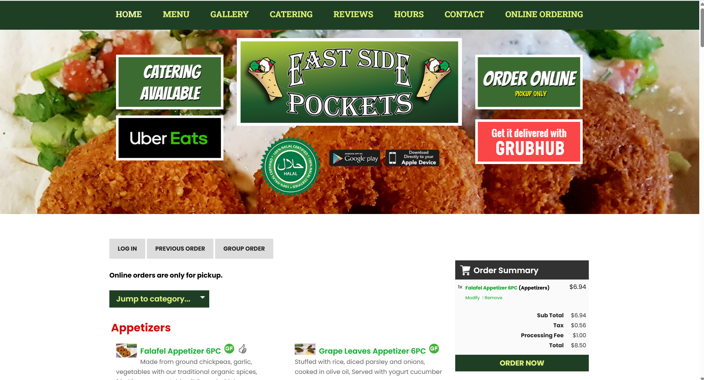
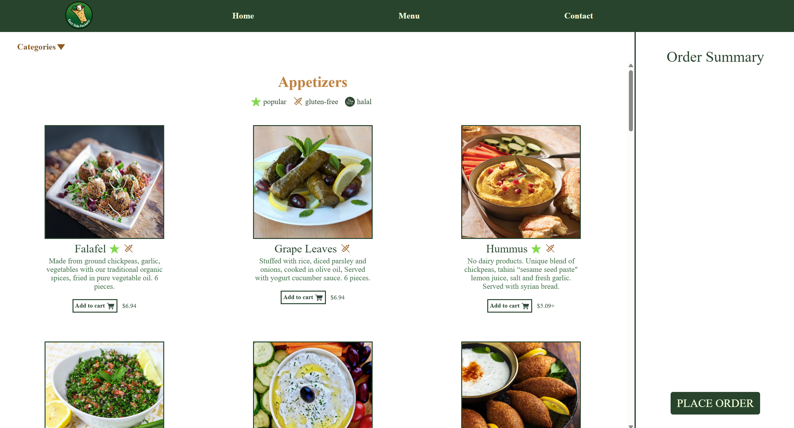
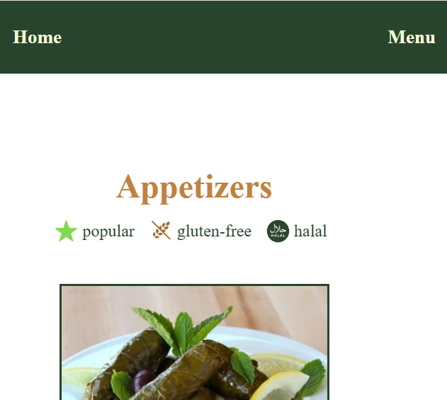
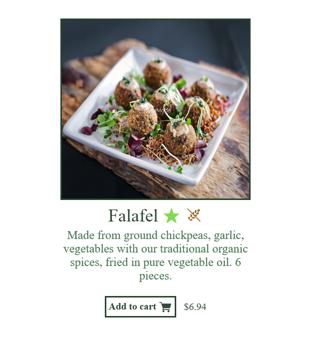
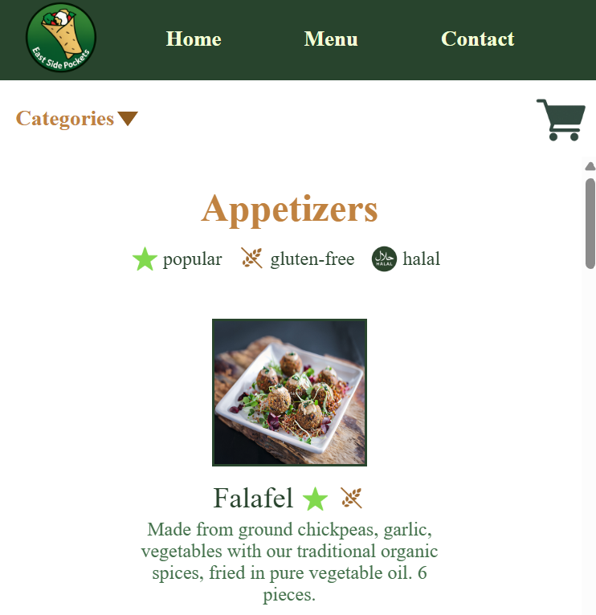

Responsive Redesign
What makes a website well-designed? While it can depend on what the website is designed for, the three tenets of accessibility, responsiveness, and adaptability are good places to start.
An accessible site solves for the different challenges its diverse set of users may face while using it, improving the experience for everyone.
A responsive site provides useful visual feedback to users, so that they feel confident navigating it.
An adaptive site functions well on many different interfaces, so users can interact with it on their own terms.
An accessible site solves for the different challenges its diverse set of users may face while using it, improving the experience for everyone.
A responsive site provides useful visual feedback to users, so that they feel confident navigating it.
An adaptive site functions well on many different interfaces, so users can interact with it on their own terms.
Choosing a Website
I was assigned to find a website I thought could do better in fulfilling the three tenets I outlined above. I thought a good place to start was the website of a local restaurant near me: East Side Pockets in Providence, Rhode Island.
Their website isn't terrible by any means; it serves its purpose and communicates the important information. However, I knew that with some improvements to the three tenets, I could elevate the site from merely functional to easy and satisfying to use.
Their website isn't terrible by any means; it serves its purpose and communicates the important information. However, I knew that with some improvements to the three tenets, I could elevate the site from merely functional to easy and satisfying to use.

A view of the original website's Menu page. The page is chock full of information, but the layout makes some of it hard to find, while overemphasizing less important elements. Below, I'll identify a few key problem areas.
Problem areas
In order to identify the most pressing problem areas, I asked myself what the purpose of the Menu page was, and what was getting in its way. The purpose is twofold: to provide a respository of information about the food they serve, and to allow customers to make online orders through the interface.

Problem 1: Unecessary Components
The large banner below the top menu persisted from the home page to the menu page. It obscures the important content on the page, making it less efficient, intuitive, and accessible. For example, people using keyboard navigation may think they went to the wrong page.Contributing to the clutter is the gratuitous number of button on the top menu, which should only display the most important information.

Problem 2: Lack of Visual Consistency
As exemplified by the buttons at the top of menu, each element on the page has its own unique color and layout. Thus, the visual language of the site is little help in navigating it.Additionally, these buttons, nor the top menu, stick to the top of the page, meaning they're lost when the user scrolls down. This makes the functionality less efficient, less memorable, and less accessible.

Problem 3: Dull and Obscure Presentation
As shown in this image, the main content of the menu itself--the menu items--are presented mostly as blocks of text with minimal visual and spacial organization.The item photographs are almost invisible, harming accessibility for visually impaired people and anyone hoping to assess the food online before ordering. To make matters worse, the icons next to the title lack explanation, and there is also no obvious place to click to order the items.
While the menu items convey information about the food, they don't do so in a manner conducive to a pleasant online ordering experience.
My Redesign
My redesigned webpage aims to streamline the original, making it more accessible and intuitive, while also enhancing its aesthetics.
The full page is accessible at this link: https://nathan-sr.github.io/cs1300/
The full page is accessible at this link: https://nathan-sr.github.io/cs1300/


Streamlining the Interface
My first peoject was cleaning up the visual clutter of the old page.To this end, I cleaned up the top menu, removed the busy banner below it, and pared down the number of buttons everywhere.
The result is a page that delivers what it needs to to fulfill its purpose, without unecessary distractions and confusing diversions.

Refreshing the Menu
My second task was to make the menu more pleasant to interact with and more straightforwardly informative for online shoppers.By making the image the centerpiece of each item, I help online shoppers while adding visual consistency and appeal. I also improved the icons to stand out visually, and added a button to clarify the user flow for adding items.
The result is a page that's simply nicer to look at, while also being more informative and easier to navigate.

Responsiveness
The original page responded to differing screen sizes by condensing the content into a smaller space. I wanted a more tailored approach.At smaller screen sizes, columns and images collapse to better fit the page while keeping the general layout consistent. On phone screens, the cart tab is replaced by the cart icon.
The result is a page that feels like it was designed for each screen resolution, rather than growing cluttered on smaller screens.
Final Thoughts
Throughout this process, I learned two valuable lessons.
The first is that the first step of improving any interface is asking the right questions. Only once you understand what the interface is trying to accomplish can you be sure your changes are improvements rather than misunderstandings.
The second is that everything in a design represents a tradeoff. In the initial website, the top menu items could be seen as gratuitous, but nonetheless exposed users to potentially useful information. A challenge in the redesign was choosing which options to keep--but I didn't let the perfect be the enemy of the good. Maybe with future iterations and user feedback I would find the ideal number of items, but for now, I was comfortable moving in the right direction.
The first is that the first step of improving any interface is asking the right questions. Only once you understand what the interface is trying to accomplish can you be sure your changes are improvements rather than misunderstandings.
The second is that everything in a design represents a tradeoff. In the initial website, the top menu items could be seen as gratuitous, but nonetheless exposed users to potentially useful information. A challenge in the redesign was choosing which options to keep--but I didn't let the perfect be the enemy of the good. Maybe with future iterations and user feedback I would find the ideal number of items, but for now, I was comfortable moving in the right direction.